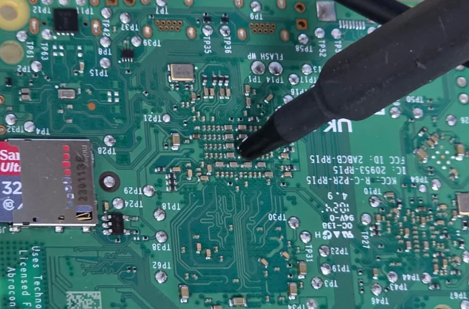

Trazer capacidade de IA para dentro da engenharia
Um piloto de seis semanas para reduzir despesa variável, conservar contexto sensível e manter alternativas.
Nuvem quando agregar valor.
Escopo: código, backend, UI e testes. Híbrido significa local + nuvem.
O consumo por token muda a conta
O relato do time aponta usuários com gastos de US$ 2 mil–10 mil. Assumimos aqui valores mensais por profissional; validar nas faturas.
Não é média de mercado. Cache, contexto repetido e agentes paralelos precisam aparecer na linha de base.
Modelos compactos merecem qualificação
| Benchmark | Qwen3.6 · 27B | Qwen3.8 · 27B |
|---|---|---|
| Terminal Bench 2.1 | 63,4 | 73,0 |
| SWE-bench Pro | 53,5 | 61,7 |
| NL2Repo | 36,2 | 42,3 |
Mesmo número nominal de parâmetros, maior resultado publicado. Validar quantização e tarefas internas; dataset não foi isolado como causa única.
Economia existe; o rateio muda o resultado
| Caso | O que sustenta | Limite |
|---|---|---|
| Pegatron | TCO modelado: US$ 9.774 → US$ 5.859 com rateio compartilhado | Com infraestrutura dedicada: US$ 14.051 |
| Yembo | Cluster Mac; economia declarada de US$ 40 mil/ano | Economia de transcrição, não geração de código |
| Nav | Qualificação de tarefas de código com Qwen em Mac | Sem economia mensal publicada |
27B e 35B cabem também nos Macs maiores
| Hardware / runtime | Modelo / quant | Geração tok/s |
|---|---|---|
| M5 Max 128 GB · MLX + MTP | Qwen3.8-27B · 4 / 8 bits | 47,00 / 28,72 |
| M5 Max 128 GB · oMLX + MTP | Qwen3.6-35B · 4 / 8 bits | 119,2 / 117,5 |
| M3 Ultra 512 GB · oMLX + MTP | Qwen3.8-27B · 4 / 8 bits | 65,0 / 43,0 |
Protocolos e aceleração variam entre linhas. tok/s não mede qualidade. Prefill e decode estão separados no relatório completo.
Conservar contexto. Escalonar por política.
Exceções autorizadas: gateway minimiza contexto e chama a nuvem. Dados proibidos de sair permanecem locais.
Controles fora do prompt
Rede e execução
Egress bloqueado por padrão, sandbox, permissões mínimas e API autenticada.
Dados e credenciais
Segredos no proxy/cofre; índices e logs com ACL, retenção e criptografia.
Versões e cadeia de suprimento
Pesos e runtimes fixados, hashes, atualizações testadas e rollback.
Ambiente físico
Hosts e acessórios sob gestão; infraestrutura dedicada para maior sensibilidade.
Conservar as ferramentas. Controlar o backend.
| Interface | Caminho local |
|---|---|
| Oh My Pi / OpenCode | Providers locais + permissões configuráveis |
| Claude Code / Codex CLI | Ollama / seleção explícita do backend local |
| Copilot CLI / VS Code | Endpoint próprio / modelos locais no chat |
Qualificar o harness com o mesmo modelo, testes e política. Defaults permissivos precisam ser revistos; isolamento e destino das conexões fazem parte do aceite.
Risco real exige ameaça bem definida

Pesquisa em Raspberry Pi, CPU e Llama 1B demonstrou vazamento eletromagnético com sonda e equipamento de laboratório.
Não prova leitura universal de prompts de um Mac a um metro de distância.
Resposta: controle físico e de workloads; avaliação de emissões para cenários de alta sensibilidade.
Relatos dos programadores entram na decisão
São sinais de experiência e risco operacional. A busca inclui menções indiretas e duplicatas; não representa incidência na base total.
Há regressões reconhecidas de versões anteriores. Intenção de liberar datacenters permanece uma hipótese, não uma conclusão.
Começar por tarefas verificáveis
| Frente | Aplicação inicial | Gate |
|---|---|---|
| Backend | APIs, SQL e refatoração delimitada | Contratos + testes |
| QA | Casos, fixtures e regressões | Execução + cobertura útil |
| UI | Componentes e correções visuais | Capturas + acessibilidade + E2E |
| Legado | Explicação e mudanças por módulo | Caracterização de comportamento |
Aceitar código exige evidência de execução, mesmo quando o agente declara que terminou.
US$ 41.400 para qualificar o caminho
| Componente | Premissa | US$ |
|---|---|---|
| Estações | 5 × 5.000 | 25.000 |
| Integração | 80 h × 100 | 8.000 |
| Segurança + validação | 30 h × 100 | 3.000 |
| Contingência | 15% | 5.400 |
Operação adicional estimada: US$ 500/mês. Configurações e preços ainda precisam de cotação.
A parcela evitada decide o payback
| API / pessoa / mês | Economia do time / mês | Retorno |
|---|---|---|
| US$ 2.000 | US$ 4.500 | 9,20 meses |
| US$ 5.000 | US$ 12.000 | 3,45 meses |
| US$ 10.000 | US$ 24.500 | 1,69 mês |
5 usuários · 50% de fatura evitada · US$ 500/mês de operação · investimento completo de US$ 41.400.
Sensibilidade: no primeiro cenário, evitar só 20% leva o retorno a 27,6 meses.
Seis semanas, critérios definidos antes
Linha de base
Faturas, tarefas, qualidade e revisão
Implantação
Configuração, isolamento e controles
Comparação
Tarefas reais, fluxo atual versus híbrido
Decisão
Economia, qualidade, segurança e capacidade
Metas propostas: ≥30% de economia total; ≤5 pp de perda de aceitação; ≤10% de aumento no ciclo; nenhuma exposição nos testes definidos.
Comprar evidência antes de escalar
Aprovar o piloto, confirmar a linha de base e tornar a expansão dependente de resultado.
Dados sob política.
Versões sob controle.
Plataforma + Segurança + FinOps + Engenharia/QA compartilham a decisão.
Da decisão ao detalhe
Pesquisa completa
Casos empresariais, tabelas de Macs 16–512 GB, MLX/llama.cpp, SSD, especialistas e segurança.
Proposta de investimento
Problem/Context, Solution, Required Investment e calculadora de sensibilidade.
As fontes estão nos rodapés e nos documentos. Setas navegam entre slides; “Imprimir / PDF” exporta a apresentação inteira.